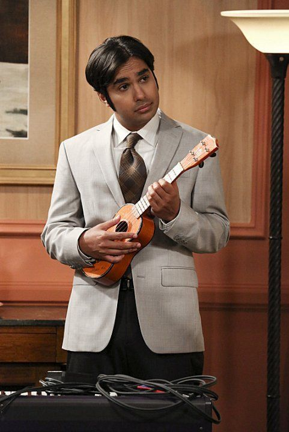

Biografia Rajesh Koothrappali

Raj Koothrappali, interpretado por Kunal Nayyar, é um astrofísico indiano que também trabalha no Caltech. No início da série, Raj é incapaz de falar com mulheres a menos que esteja sob o efeito de álcool, uma característica que gera muitas situações cômicas. Ele é sensível, romântico e profundamente ligado à sua cultura indiana, embora frequentemente tenha dificuldade em equilibrar suas tradições com sua vida nos Estados Unidos. Raj é o melhor amigo de Howard, e sua relação bromântica é um dos destaques da série. Ao longo do tempo, Raj aprende a superar seus problemas sociais e busca encontrar o amor.